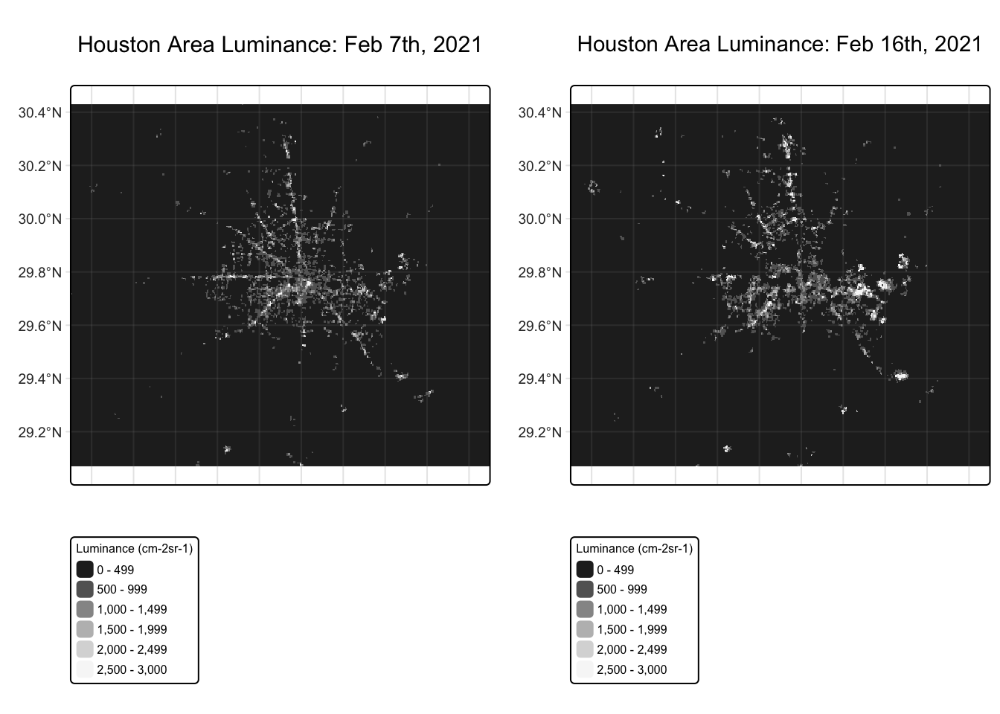
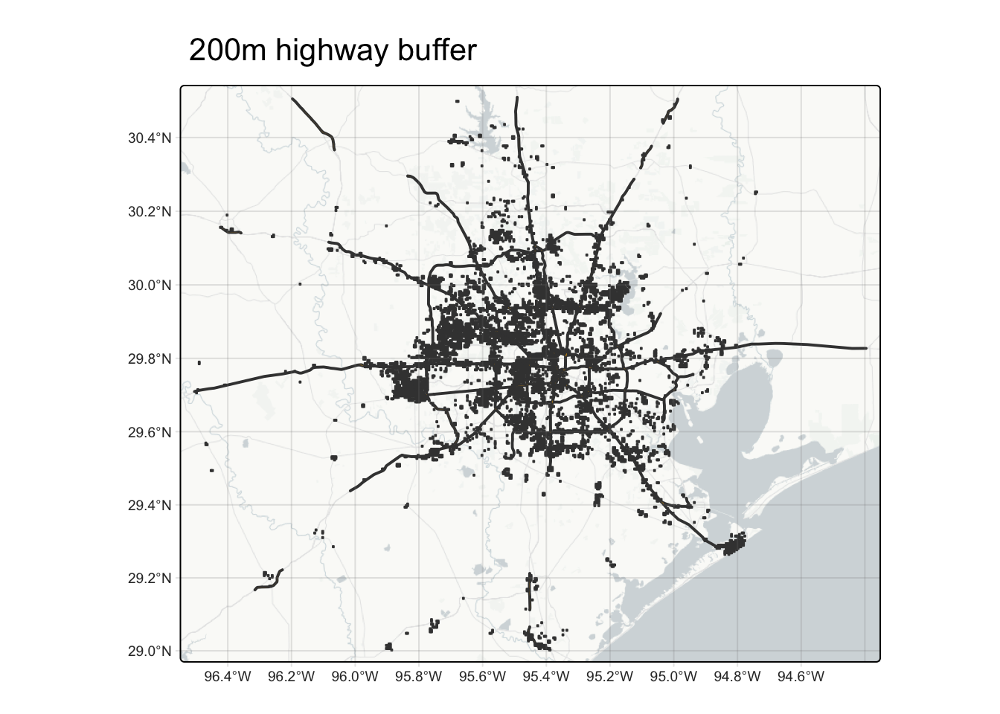
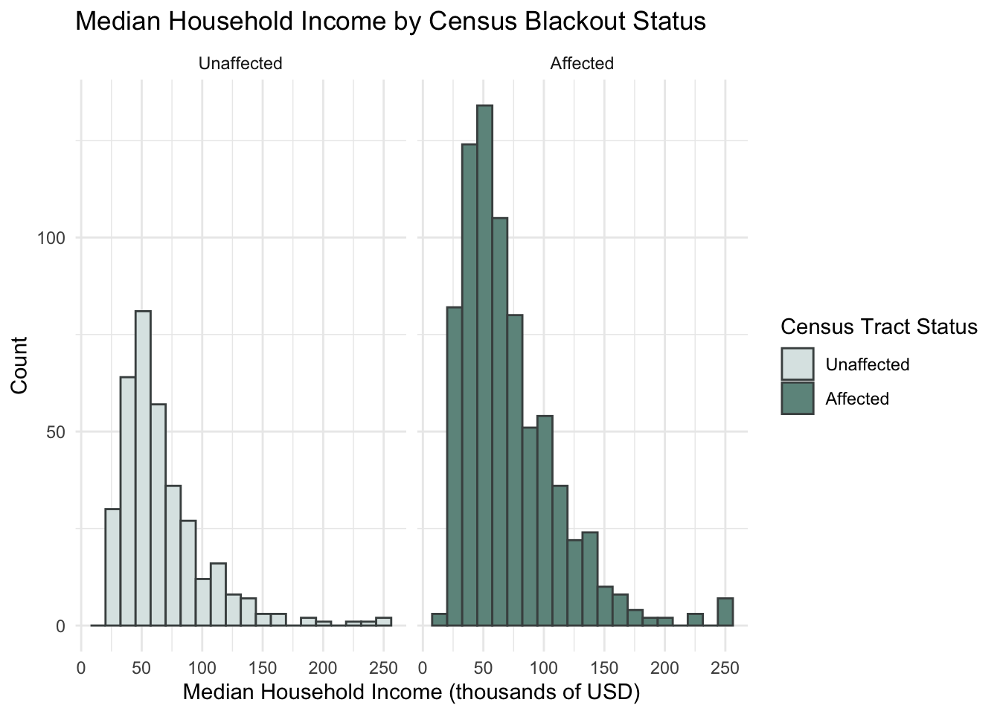

![]()
Code
library(tidyverse)
library(stars)
library(sf)
library(terra)
library(tmap)
library(testthat)
library(scales)As climate change increases the frequency of extreme weather events, the impacts associated with these events are felt more intensely by the communities that live there. Between February 13-17, 2021, Texas experienced a power crisis due to a severe winter storm named Uri. The increased demand for electricity for heating strained the Texas power grid and caused the implementation of rolling blackouts, leading to extended power outages for many (Zhou et al. 2024). The Texas power grid is managed by the Electrical Reliability Council of Texas (ERCOCT) and operates independently, not connected to other states’ power grids or able to borrow from them in a crisis (Monahan et al. 2024). As a result of this storm, at least 246 people died and $195 billion dollars worth of damage were caused (Zhou et al. 2024). By understanding how this impact of losing power was felt across the Houston community, we can allocate resources and plan more strategically for future weather events.
Objective: Throughout this blog, we will use VIIRS, OpenStreetMap, and U.S. Census data to visualize the impacts of the winter storms by estimating the number of homes in the Houston metropolitan area that lost power and combine this with socioeconomic data about median household income to investigate whether these impacts were disproportionately felt.
library(tidyverse)
library(stars)
library(sf)
library(terra)
library(tmap)
library(testthat)
library(scales)The VIIRS data used for visualizing the extent of power outages around the day of the storm is distributed through NASA’s Level-1 and Atmospheric Archive & Distribution System Distributed Active Archive Center (LAADS DAAC). Two 10x10 degree tiles per date of interest were used for this analysis (“VIIRS” 2025).
# Read in night light data tiles
tile1_2021_02_07 <- stars::read_stars(here::here("posts", "2025-12-01-eds223", "data", "VNP46A1", "VNP46A1.A2021038.h08v05.001.2021039064328.tif"))
tile2_2021_02_07 <- stars::read_stars(here::here("posts", "2025-12-01-eds223", "data", "VNP46A1", "VNP46A1.A2021038.h08v06.001.2021039064329.tif"))
tile1_2021_02_16 <- stars::read_stars(here::here("posts", "2025-12-01-eds223", "data", "VNP46A1", "VNP46A1.A2021047.h08v05.001.2021048091106.tif"))
tile2_2021_02_16 <- stars::read_stars(here::here("posts", "2025-12-01-eds223", "data", "VNP46A1", "VNP46A1.A2021047.h08v06.001.2021048091105.tif"))
# Combine tiles for each date into a single continuous raster
lights_2021_02_07 <- st_mosaic(tile1_2021_02_07, tile2_2021_02_07)
lights_2021_02_16 <- st_mosaic(tile1_2021_02_16, tile2_2021_02_16)
# Crop each light raster to Houston area
bb <- st_bbox(c(xmin = -96.5, xmax = -94.5, ymax = 30.5, ymin = 29.0),
crs = st_crs(lights_2021_02_07))
lights_2021_02_07 <- st_crop(lights_2021_02_07, bb)
lights_2021_02_16 <- st_crop(lights_2021_02_16, bb)To visually compare the night light intensities before and after the first two storms, the VIIRS light rasters from February 7th (before) and February 16th (after) were mapped side by side.
# Create manual breaks for clearer differences
breaks <- c(0, 500, 1000, 1500, 2000, 2500, 3000)
# Create plot of Feb 7th light raster- before storm
before_lights <- tm_shape(lights_2021_02_07) +
tm_raster(palette = "-Greys",
breaks = breaks,
title = "Luminance (cm-2sr-1)"
) +
tm_title(text = "Houston Area Luminance: Feb 7th, 2021") +
tm_layout(legend.text.size = 0.5,
legend.title.size = 0.5) +
tm_graticules(alpha = 0.2)
# Create plot of Feb 16th light raster- after storm
after_lights <- tm_shape(lights_2021_02_16) +
tm_raster(palette = "-Greys",
breaks = breaks,
title = "Luminance (cm-2sr-1)"
) +
tm_title(text = "Houston Area Luminance: Feb 16th, 2021") +
tm_layout(legend.text.size = 0.5,
legend.title.size = 0.5) +
tm_graticules(alpha = 0.2)
tmap_arrange(before_lights, after_lights)
There are more lights visible in the date prior to the storms.
The road and house data was obtained from OpenStreetMap (OSM), a collaborative project which creates publicly available geographic data (“OpenStreetMap Geofabrik Download” 2025). The shapefiles were retrieved from Geofabrik’s download sites and then filtered to a Geopackage (.gpkg) file containing just the subset of features that intersect the Houston metropolitan area.
# Read in roads data and filter to only class motorway
roads <- sf::st_read(here::here("posts/2025-12-01-eds223/data/gis_osm_roads_free_1.gpkg"),
query = "SELECT * FROM gis_osm_roads_free_1 WHERE fclass='motorway'",
quiet = TRUE)
# Transform CRS to NAD83 / Texas Centric Albers Equal Area
roads <- st_transform(roads, 3083)
# Read in buildings data and filter to only types of houses
houses <- sf::st_read(here::here("posts/2025-12-01-eds223/data/gis_osm_buildings_a_free_1.gpkg"),
query = "SELECT * FROM gis_osm_buildings_a_free_1 WHERE (type IS NULL AND name IS NULL)
OR type in ('residential', 'apartments', 'house', 'static_caravan', 'detached')",
quiet = TRUE)
# Transform CRS to NAD83 / Texas Centric Albers Equal Area
houses <- st_transform(houses, 3083)The socioeconomic data for 2019 census tracts was obtained from the U.S Census Bureau’s American Community Survey, which collects detailed social, economic, housing, and demographic information from households across the US (U.S. Census Bureau 2025).
# Read in entire geodatabase
socioeconomic <- st_read(here::here("posts/2025-12-01-eds223/data/ACS_2019_5YR_TRACT_48_TEXAS.gdb"),
quiet = TRUE)
# Explore socioeconomic geodatabase layers
layer_info <- st_layers(dsn = here::here("posts/2025-12-01-eds223/data/ACS_2019_5YR_TRACT_48_TEXAS.gdb"))
#layer_info
# Create geometry layer using appropriate layer names
ACS_tract_geometry <- st_read(here::here("posts", "2025-12-01-eds223", "data", "ACS_2019_5YR_TRACT_48_TEXAS.gdb"),
layer = "ACS_2019_5YR_TRACT_48_TEXAS",
quiet = TRUE)
# Create attribute layer
ACS_tract_attributes <- st_read(here::here("posts", "2025-12-01-eds223", "data", "ACS_2019_5YR_TRACT_48_TEXAS.gdb"),
layer = "X19_INCOME",
quiet = TRUE)
# Rename GEOID_Data column in ACS_tract_geometry to GEOID for a correct join
ACS_tract_geometry <- ACS_tract_geometry %>%
rename(GEOID_old = GEOID) %>%
rename(GEOID = GEOID_Data)
# Combine layers
ACS_tracts <- ACS_tract_geometry %>%
left_join(ACS_tract_attributes, by = "GEOID") %>%
st_as_sf()
# Crop to Houston area
bb <- st_bbox(c(xmin = -96.5, xmax = -94.5, ymax = 30.5, ymin = 29.0),
crs = st_crs(ACS_tracts))
ACS_tracts <- st_crop(ACS_tracts, bb)
# Transform CRS to NAD83 / Texas Centric Albers Equal Area
ACS_tracts <- st_transform(ACS_tracts, 3083)As a final data loading step, we want to ensure that the CRS of each data set is the same for further spatial operations. The CRS we are using for this analysis is the NAD83 / Texas Centric Albers Equal Area projection, or EPSG:3083.
# Ensure data sets have same coordinate reference systems
if((st_crs(roads) == st_crs(houses))
& (st_crs(houses) == st_crs(lights_2021_02_07))
& (st_crs(lights_2021_02_07) == st_crs(lights_2021_02_16))
& (st_crs(lights_2021_02_07) == st_crs(ACS_tracts))){
print("Coordinate reference systems match")
} else{
warning(" Updating coordinate reference systems to match")
# transform data to match selected CRS
crs_3083 <- st_crs(roads)
roads <- st_transform(roads, crs_3083)
lights_2021_02_07 <- st_transform(lights_2021_02_07, crs_3083)
lights_2021_02_16 <- st_transform(lights_2021_02_16, crs_3083)
ACS_tracts <- st_transform(ACS_tracts, crs_3083)
}Warning: Updating coordinate reference systems to matchTo identify places that experienced a blackout, a mask was created to indicate for each cell whether or not it experienced a blackout. The threshold for this mask was a drop of more than 200 nW cm-2sr-1 between the pre and post storm night light rasters. This blackout mask was then vectorized.
# Find the change in night lights intensity pre and post storm
light_difference <- lights_2021_02_07 - lights_2021_02_16
# Assign NA to cells that experienced a change less than 200 nW cm-2sr-1
light_difference[light_difference < 200] <- NA
# Vectorize the blackout mask and fix invalid geometries
light_diff_vec <- light_difference %>%
st_as_sf() %>%
st_transform(3083)
# Test for valid geometry
expect_false(any(!st_is_valid(light_diff_vec)))Starting with the vectorized blackout mask, areas within 200m of a highway needed to be excluded as well from the analysis as these areas experience potentially confounding changes in light intensity unrelated to the storm.
# Check units of CRS for distance argument in buffer
units <- st_crs(roads)$units
# Create 200m buffer around all highways
highway_buffer <- st_buffer(roads, dist = 200)
# Combine buffer geometries- dissolve multi-polygons
highway_union <- st_union(highway_buffer)
# Create data frame for blackouts that are not in the highway union
true_blackouts <- st_difference(light_diff_vec, highway_union)
# Visualize buffer
tm_shape(highway_union) +
tm_polygons(fill = "#c38f16") +
tm_title(text= "200m highway buffer") +
tm_shape(true_blackouts) +
tm_polygons(fill = "#122c43") +
tm_basemap("CartoDB.PositronNoLabels") +
tm_graticules(alpha = 0.2) 
The units of the roads CRS is m.
Using the finalized vector data for areas that experienced blackouts from the previous analysis step, homes that experienced blackouts were identified by filtering the houses data to those that intersect with the true blackout polygons. The count of homes that lost power is therefore the number of rows in the resulting data frame.
# Filter homes to those that intersect with the true blackouts polygon
blackout_houses <- st_intersection(houses, true_blackouts)
# Get number of affected homes by number of rows
n_affected_houses <- nrow(blackout_houses)
# Create map of homes that experienced blackouts
tm_shape(blackout_houses) +
tm_polygons(fill = "#122c43") +
tm_add_legend(type = "fill",
labels = c("Blackout"),
fill = c("#122c43")) +
tm_basemap("CartoDB.PositronNoLabels") +
tm_title(text = "Houston Homes that Experienced Blackouts") +
tm_graticules(alpha = 0.2)
The estimated number of homes in Houston that lost power between February 7th and February 16th, 2021 is 169469.
To identify the census tracts impacted by the blackout, the U.S Census tract data was filtered to only census tracts that spatially intersected homes that experienced blackouts. An additional column was added to retain this information, where TRUE corresponds to a tract that had homes that experienced a blackout and FALSE corresponds to those that did not. These census polygons were filtered based on this column and plotted in separate colors to visualize the impact in the Houston area by census tract.
# Create df for tracts that intersect homes that experienced blackouts and create 'TRUE' column
blackedout_tracts <- st_filter(ACS_tracts, blackout_houses) %>%
mutate(blackout = TRUE)
# Define logic-based TRUE/FALSE column in full census data using previous data frame values
census <- ACS_tracts %>%
mutate(blackout = ACS_tracts$GEOID %in% blackedout_tracts$GEOID)
# Filter census data frame to reduce computation time
census <- census %>%
select('GEOID', 'B19013e1', 'Shape', 'TRACTCE', 'blackout')
# Select true blackouts for plotting
census_true <- census %>%
filter(blackout == TRUE)
# Plot full census tracts and overlay with plotted true census tracts
tm_shape(census) +
tm_polygons(fill = "#dce6e5") +
tm_shape(census_true) +
tm_polygons(fill = "#6e948c") +
tm_add_legend(type = "fill",
labels = c("Blackout", "No blackout"),
fill = c("#6e948c", "#dce6e5")) +
tm_layout(frame.double_line = TRUE) +
tm_basemap("CartoDB.PositronNoLabels") +
tm_title(text = "Houston Area Census Tracts Impacted by the Blackout") +
tm_borders(lwd = 0.8) +
tm_graticules(alpha = 0.2)
After identifying which census tracts experienced blackouts during the winter storms and which did not, we can connect information about the estimated median income for each census tract. This will allow us to see whether or not there was a disproportionate effect.
# Plot histogram of median income faceted by tracts affected and unaffected by the blackouts
median_income_hist <- ggplot(census, aes(x = B19013e1, fill = blackout)) +
geom_histogram(color = "#484f4f", bins = 20) +
scale_fill_manual(values = c("#dce6e5","#6e948c"),
labels = c("Unaffected", "Affected")) +
scale_x_continuous(labels = label_number(scale = 1e-3)) +
facet_wrap(~blackout,
labeller = as_labeller(c(`TRUE` = "Affected", `FALSE` = "Unaffected"))
) +
labs(title = "Median Household Income by Census Blackout Status",
x = "Median Household Income (thousands of USD)",
y = "Count",
fill = "Census Tract Status"
) +
theme_minimal()
median_income_hist
# Create boxplot of median income faceted by tracts affected and unaffected by the blackouts
median_income_box <- ggplot(census, aes(x = blackout, y = B19013e1, fill = blackout)) +
geom_boxplot(alpha = 0.8) +
scale_fill_manual(values = c("#dce6e5","#6e948c"),
labels = c("Unaffected", "Affected")) +
labs(title = "Median Household Income by Census Blackout Status",
x = "Blackout",
y = "Median Household Income (USD)",
fill = "Census Tract Status") +
theme_minimal()
median_income_box
Based upon the histogram and bar plot, census tracts that experienced blackouts during the winter storms had a slightly higher estimated median income with a wider range compared to census tracts that did not experience blackouts but there is not a definite disproportionate effect. Based upon the map, many of the census tracts that were affected are located in the metropolitan areas of Houston possibly due to the power grid there being more interconnected. That might have an effect on the income distributions if people living in urban areas have more varied incomes. One study limitation might have been how the blackouts were accounted for, as we don’t know for certain that these light differences were due to the storms and not other factors such as day of the week or not having as much activity in the city due to the severe weather conditions.
For further analysis, I would like to conduct the same analysis for rural Texas areas, and include additional time points to see how long different communities were without power. As a native Texan, I experienced this storm from Austin. The impacts were certainly felt across the state, and we experienced prolonged time without power. This crisis was also coming right after the COVID-19 pandemic, which also had extremely disproportionate impacts on marginalized communities in Texas (Ura and Garnham 2021).
@online{robillard2025,
author = {Robillard, Ava},
title = {Houston {Power} {Grid} {Analysis}},
date = {2025-12-06},
url = {https://avarobillard.github.io/posts/2025-12-01-eds223},
langid = {en}
}